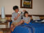

2002年4月30日 15時14分撮影
海の次はプールへ。。。由起子はプールが大好き！
毎日毎日時間を見つけてはプールへまっしぐらです。2002年4月30日 9時21分撮影
海がとーっても綺麗です。
足元に可愛いお魚さんが集まってきます。2002年4月29日 19時18分撮影
食事はバイキング。その種類はものすごい。
ついつい食べすぎてしまうのだ。毎食フルコースなんだもん。。
2002年4月29日 18時21分撮影
２日目の夕方、髪の毛を乾かしてもらっている由起子。
プティクラブで楽しい一日を過ごしました。2002年4月28日 15時11分撮影
やって来ました。。。石垣島。。。楽しんじゃうぞぉー！2002年4月12日 11時33分撮影
我が家に滞在されてたキャトリーヌさん。
フリーの日に一緒に京都へ行きました【金閣寺にて】2002年4月5日 9時17分撮影
今日は「保育所の入園式」なのです。たまたま通園途中、
お花見会に行くおばあちゃんと出会いました。2002年3月31日 12時23分撮影
お弁当を持って、近くの桜の名所へお花見に。
風が吹くと桜吹雪がとても綺麗です。しゃーわせぇ。。。。2002年3月3日 13時03分撮影
「赤ずきんちゃん」のお花さん役でした。一生懸命だよ〜ん。2002年3月3日 11時37分撮影
市民会館は人であふれかえっていました。ママたち合唱団の
演奏会にもこれぐらいの人が来たらすっごいのになぁ。。。